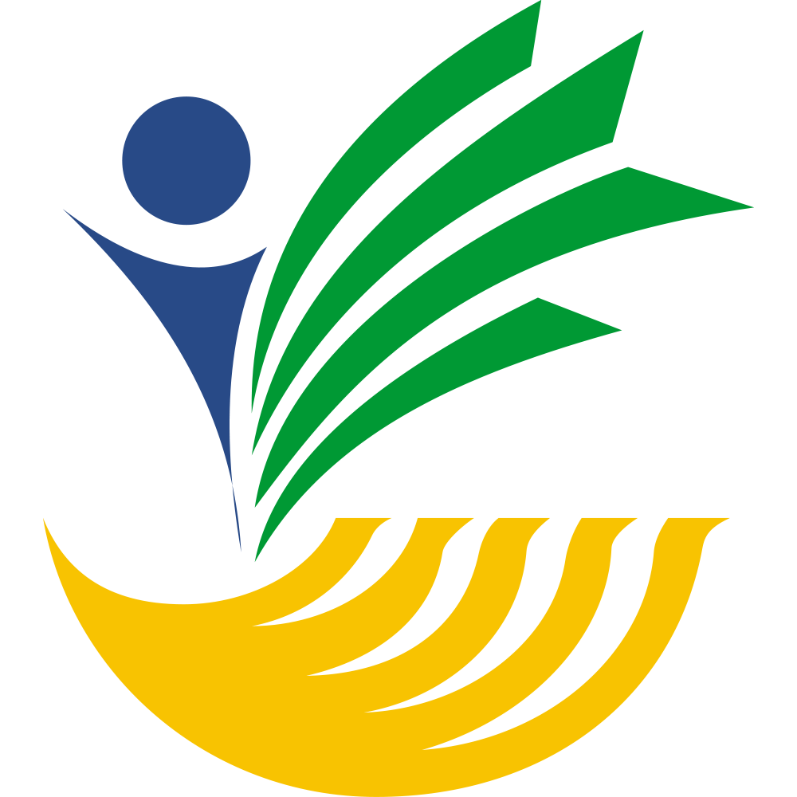

Generator Laporan RHK Panggul
Langkah 1: Pilih Nomor Rencana Hasil Kerja (RHK)
Langkah 2: Pilih Laporan Kegiatan Harian
RHK Terpilih:
Langkah 3: Konfirmasi & Isi Data
✅ RHK Terpilih:
✅ Laporan Kegiatan Terpilih:
✅ Laporan Hasil Generate
|
 |
KEMENTERIAN SOSIAL REPUBLIK INDONESIADIREKTORAT JENDERAL PERLINDUNGAN DAN JAMINAN SOSIALDIREKTORAT PERLINDUNGAN SOSIAL NON KEBENCANAANJalan Salemba Raya No. 28 Jakarta Pusat 10430 Telp. (021) 3103591 http://www.kemsos.go.id |
A. PENDAHULUAN
1. Umum
2. Maksud dan Tujuan
3. Ruang Lingkup
4. Dasar Hukum
B. KEGIATAN YANG DILAKSANAKAN
| Nama Pelaksana | : |
| Periode Laporan | : |
| Tempat Pelaksanaan | : |
| Jumlah Peserta (Target) | : |
| Realisasi Kehadiran | : |
C. HASIL YANG DICAPAI
D. SIMPULAN DAN SARAN
1. Simpulan
2. Saran
E. PENUTUP
Dibuat di Trenggalek
Pada Tanggal ....................
.................................